15. Saltar árboles¶
En esta práctica vamos a programar un juego parecido al juego del dinosaurio que aparece en el navegador Chrome cuando no hay conexión a Internet. Un dinosaurio correrá todo el tiempo hacia la derecha de la pantalla mientras aparecen árboles que tendrá que saltar para no chocarse con ellos.
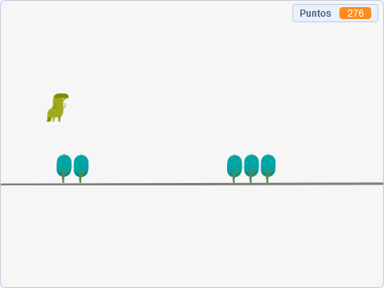{kind=link}
Iniciamos el editor de Scratch.
Pulsamos el botón idioma en la barra superior y elegimos Español.
Borramos el objeto gato presionando sobre el icono del cubo de basura.
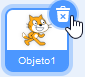
A continuación añadimos un nuevo personaje, un dinosaurio.
Pulsamos el botón elige un objeto
 .
.Buscamos en la sección Animales.
y seleccionamos el objeto Dinosaur4.

Ahora crearemos la variable velocidad que va a almacenar la velocidad de salto del dinosaurio. Al comienzo del salto esta velocidad será positiva, pero irá decreciendo hasta hacerse negativa cuando el dinosaurio caiga hacia el suelo.
Pulsamos el botón de variables 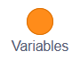,
pulsamos en crear una variable .
Cambiamos el nombre de la variable a velocidad
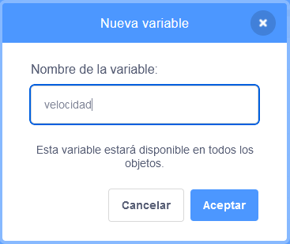Por último pulsamos el botón Aceptar
Ahora crearemos la variable puntos que va a almacenar los puntos que obtenemos durante el juego.
Pulsamos el botón de variables ,
pulsamos en crear una variable .
Cambiamos el nombre de la variable a puntos

Por último pulsamos el botón Aceptar
Creamos tres bloques distintos Iniciar, Saltar y Finalizar que programaremos más adelante.
Ahora ya podemos crear nuestro primer programa del dinosaurio. Al comenzar el programa iniciará las variables y posiciones, después de esperar un segundo enviará a todos los objetos la orden de jugar y por siempre se encargará de hacer saltar al dinosaurio y de comprobar si el programa ha finalizado.
En este tipo de programación Top-Down primero definimos esta rutina principal y después detallaremos cada una de las subrutinas secundarias.
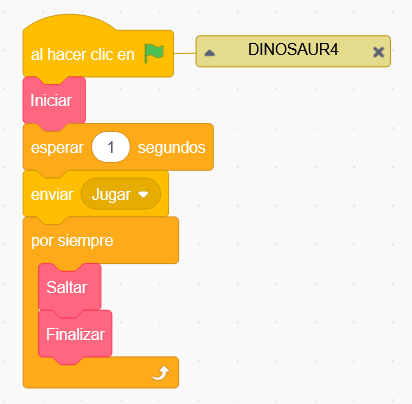Para continuar, definimos las órdenes del bloque Iniciar. Este bloque va a borrar la pantalla, situará al dinosaurio en su posición de inicio, le mostrará el tamaño y disfraz adecuado. También establecerá los valores iniciales de las variables y su visualización en pantalla.
Recuerda pulsar en el botón de añadir extensión
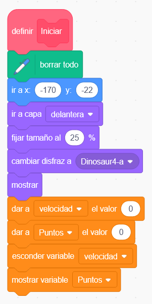 y elegir la extensión Lápiz para poder utilizar las instrucciones
verdes como
y elegir la extensión Lápiz para poder utilizar las instrucciones
verdes como Borrar todo.También programaremos el bloque Saltar. Este bloque calcula la velocidad del salto cuando el dinosaurio se encuentra por encima del suelo, de manera que suba con una velocidad cada vez menor hasta que comienza a caer otra vez hacia el suelo. Este programa simula la fuerza de la gravedad y la dinámica de un salto real.
Una vez en el suelo (posición y < -32), el dinosaurio volverá a tener velocidad cero.
Cuando pulsemos las teclas espacio o flecha hacia arriba, el dinosaurio volverá a saltar hacia arriba con una velocidad inicial de 10.
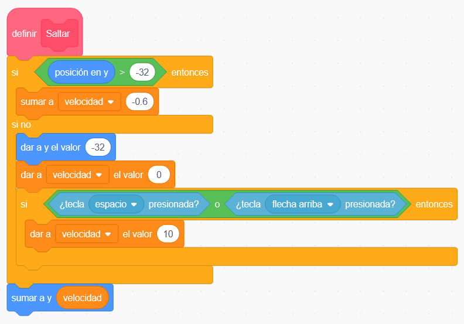El bloque Finalizar se encarga de comprobar que el dinosaurio ha chocado con un árbol. En ese caso se copia en pantalla una imagen del dinosaurio con la boca abierta, que no se mueva. Envía el mensaje Muere a todos los demás objetos y finaliza el programa.
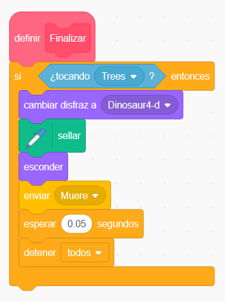Para continuar, programaremos el comportamiento del marcador de puntos al comenzar el juego. Este marcador debe sumar puntos continuamente hasta que el juego termine.
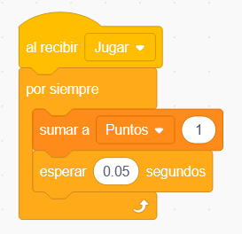Para conseguir un movimiento más realista, desde el momento en el que comience el juego vamos a cambiar el disfraz del dinosaurio continuamente para que parezca que está corriendo.
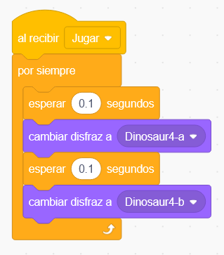Pulsamos la bandera verde para probar el funcionamiento del programa.
El dinosaurio correrá manteniéndose en una posición fija de la pantalla. Cuando pulsemos la tecla espacio o flecha arriba, el dinosaurio deberá dar un salto hacia arriba y volver a caer.
Ahora vamos a añadir un suelo al juego. Debemos pulsar en la opción de pintar un objeto para que aparezca un nuevo objeto en el juego.
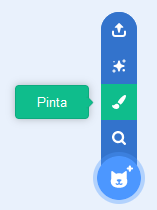En la pestaña de disfraces dibujamos una línea con relleno gris y brillo 50, con borde gris 50 y con grosor 6.
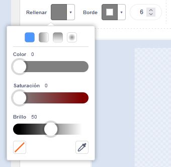 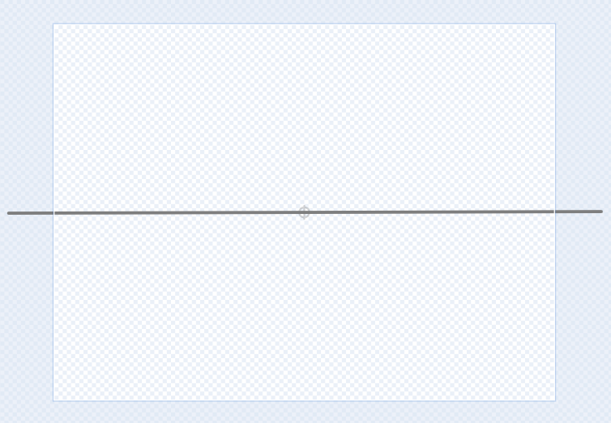La línea debe sobresalir por ambos lados de la pantalla para estar seguros de que cubrirá todo el ancho de pantalla al mostrarse.
Ya podemos cambiar a la pestaña de código para realizar el programa, que será muy sencillo. Solo mostrará la línea en la posición adecuada.
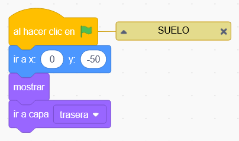Terminado el suelo, vamos a añadir los árboles al juego. Añadimos un nuevo personaje, Trees.
Pulsamos el botón elige un objeto
.Buscamos en la sección Todos.
y seleccionamos el objeto Trees.

En la pestaña de disfraces borraremos el arbol llamado Trees-b. A continuación duplicaremos el árbol llamado Trees-a pinchando con el botón derecho del ratón sobre su imagen.
Una vez duplicado aparecerá otra imagen llamada Trees-a2 que vamos a modificar para que contenga dos árboles.
Con la herramienta selección seleccionamos todo el árbol y lo duplicamos con el botón de copiar y con el botón de pegar.
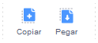Para terminar, movemos el árbol recién copiado para que se sitúe al lado del primer árbol.

Realizamos la misma operación que en el punto anterior duplicando el disfraz del árbol y duplicando dos veces el árbol inicial para que tengamos esta vez un disfraz con tres árboles en total.
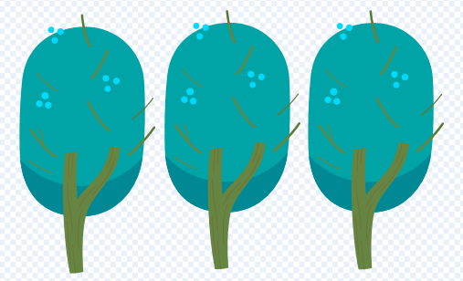Una vez terminados los disfraces de los árboles, vamos a completar el código del programa. Comenzamos por el inicio que borra todo, coloca los árboles a la derecha de la pantalla con el tamaño al 20% y escondidos de la vista.
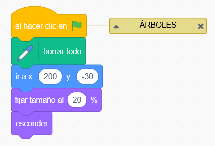Al recibir el mensaje de Jugar, el código comenzará a crear clones de los árboles con un disfraz aleatorio. Entre un clon y otro esperaremos un tiempo aleatorio entre 1.5 y 3.5 segundos.

Cada vez que comience como clon un árbol, se debe mostrar en pantalla y esperar hasta que toque el borde izquierdo. En ese momento aplicaremos un efecto de desvanecimiento y eliminamos el clon.

Para que los árboles se muevan a la izquierda, dando la sensación de que el dinosaurio corre hacia la derecha, hay que añadir el siguiente código que mueve el árbol para cada clon.

Para terminar con este código, al recibir el mensaje de que el dinosaurio Muere, debemos sellar los clones en la pantalla y eliminarlos.
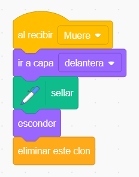Solo nos queda la tarea de añadir un mensaje de "Game Over" cuando el juego termina. Volvemos a pulsar sobre la opción de pintar un objeto.
Escribimos el mensaje Game Over con la herramienta Texto, Rellenar en color negro y el tipo de letra Pixel.
 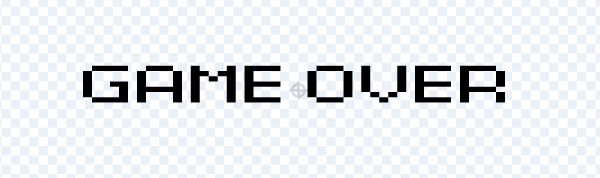
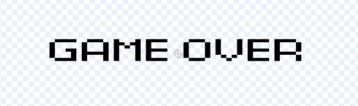
Ahora solo queda completar el código que esconda el mensaje hasta que termine el programa, momento en el que debe mostrarse.
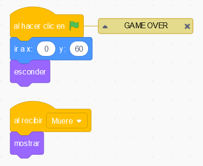Pulsamos la bandera verde para probar el funcionamiento del programa.
{kind=link}
{kind=link}
{kind=link}
{kind=link}
{kind=link}
{kind=link}
{kind=link}
{kind=link}
{kind=link}
{kind=link}
{kind=link}
{kind=link}
Retos¶
Aumenta la aceleración en el salto para hacer el juego más difícil. Para conseguirlo, resta a la velocidad, en el bloque Saltar, un número mayor. Prueba con varios valores hasta que encuentres uno que funcione, pero haga más difícil el juego.
Añade un movimiento de giro en cada salto del personaje.
Cuando los puntos tengan un valor superior a 1000, aumenta la dificultad del juego haciendo que aparezcan árboles con más frecuencia (cada menos tiempo).